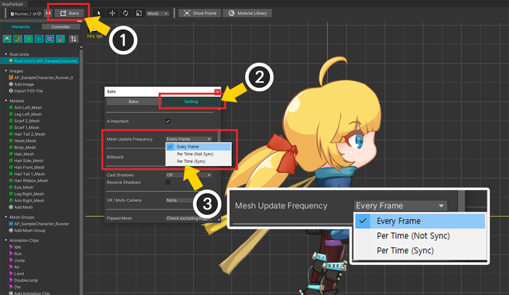

AnyPortrait > マニュアル > 低いFPSでプレイ
低いFPSでプレイ
1.4.7
テレビや劇場で上映されるアニメーションを見ると、低いフレームで再生されることがわかります。
手ですべてのフレームを描いたクラシカルな制作方式による限界でしょうが、その低いフレームが持つ魅力をみんなが一度ずつは感じたはずです。
「AnyPortrait」はもともとゲームを目指して開発されたため、ゲーム中は毎フレームごとにアニメーションによってメッシュが更新されます。
しかし、アニメーションの「FPS（Frames per second）」を減らして、まるで古典的なアニメーションのように再生されれば、面白い結果を作ることができます。

ゲームはできるだけ高い「FPS」で動作するため、「低いFPS」でアニメーションを再生したい場合は、別の方法で処理する必要があります。
(1) 基本的には、ゲームのフレームごとにアニメーションに合わせてメッシュが更新されます。
(2) 「低いFPS」でアニメーションを再生するためには、ゲームの特定のフレームではメッシュが更新され、その他のフレームでは更新されていないまま前の状態が維持されなければなりません。
つまり、「メッシュが更新される頻度」を調整することが低いFPSでアニメーションを再生するためのアプローチです。
このページでは、「Mesh Update Frequency」オプションを使用して「FPS」を減らす方法について説明します。
Mesh Update Frequency
「AnyPortrait v1.4.7」で追加された「Mesh Update Frequency」オプションを使用すると、アニメーションの「FPS」を調整できます。
このオプションを変更する3つの方法を試してください。

最初の方法は「Bakeダイアログ」でオプションを設定することです。
(1) 「Bake」ボタンを押して「Bake」ダイアログを開きます。
(2) 「Setting」タブを選択します。
(3) 「Mesh Update Frequency」オプションの値を変更します。
次の3つの方法のオプションがあります。
- Every Frame : 毎フレームごとにマッシュが更新されます。 (既定値)
- Per Time (Not Sync) : 低いFPSでメッシュが更新されます。
- Per Time (Sync) : 低いFPSでメッシュが更新され、同じオプションのキャラクター間のメッシュ更新タイミングが同期されます。

「Every Frame」以外の2つのオプションが、このページで扱う「低いFPSで再生」するための設定です。
上記のように「Per Time（Not Sync）」（または「Per Time（Sync）」）を設定すると、「FPS」オプションがさらに登場します。
ここで一般的な映像再生率である「60より低い値」を入力すると、古典アニメのような感じを与えることができるでしょう。
メモ
FPSオプション値として「最大30 FPS」の値のみ入力できます。
一般的な画面再生率である「60 FPS」を基準に、もし「30～60 FPSの間の値」を入力すると、「連続再生されるフレーム」と「休むフレーム」が交互に処理されます。
これは良い結果を示さないため、「最大30 FPS」に制限する必要があります。

2番目の方法は「Inspector UI」で設定することです。
(1) シーンからキャラクターを選択します。
(2)「設定」タブを選択します。
(3) Bakeダイアログと同様に、「Mesh Update Frequency 」オプションを設定します。
3番目の方法は「スクリプト」を使用することです。
「apPortrait」の次の関数を使ってみてください。（スクリプトの説明ページ）
1. public void SetUpdateMeshesEveryFrame()
: メッシュ更新頻度を「Every Frame」に設定します。
2. public void SetUpdateMeshesPerTime(int fps, bool isSyncUpdate)
: メッシュ更新頻度を「Per Time」に設定します。
- int fps : 更新頻度に対応するFPS値。 30以下の値を入力してください。
- bool isSyncUpdate : 「true」と入力すると、他のキャラクタとメッシュ更新タイミングが同期されます。
これらのオプションを使ってアニメーションのFPSを調整した結果を次の動画で確認してください！
それぞれのオプションと主要FPSについて比較しながら見ることができます。
「Per Time」オプションの場合は、「同期」かどうかの違いも一緒に確認してみてください。
Importantオプションとのパフォーマンス比較
AnyPortraitの「Important」オプションもリフレッシュレート、つまりFPSに関連するオプションです。 (関連ページ)
最適化のために「Important」を「無効にする」ことができ、断続的な更新のために「FPS」を設定できます。
そのため、「Important オプションを無効にする」と「Mesh Update Frequency の Per Time オプション」はまったく同じように見えます。
ただし、これら2つのオプションはまったく異なる目的で開発されたため、次の違いがあります。
1. Important オプション
この機能は最適化のために提供されるオプションです。 (Important オプションを無効にする場合)
多数のキャラクターがシーンに登場する場合、比較的あまり重要でないキャラクターの演算を分散させる役割を果たします。
ゲームの状態に合わせてFPSを調整し、操作が特定のフレームに集まらないように分散させます。
状況によっては、指定されたFPSよりはるかに低いFPSで更新されることもあります。
また、アップデートが断続的に動作するにつれて演算エラーが予想される「物理機能」は、一旦無効になる。
2. Mesh Update Frequency オプション
これは視覚的な演出のためだけのものであり、パフォーマンスを最適化するためのものではありません。
そして、すべてのオプションで物理機能などが動作するという特徴があります。
2つのオプションで最大の違いを示すのはパフォーマンスです。
次のプロファイリング結果を通じて違いを確認しましょう。

上記のようにキャラクターを50回複製した後、再生するシーンを構成しました。

まず、「Importantオプションがオンの状態」で、「Mesh Update Frequency」オプションを「Every Frame」に設定しました。
この状態はAnyPortraitのデフォルトでもあります。
ゲームを実行すると、プロファイラを通してゲームが約「30 FPS」程度を記録するのを見ることができます。

以下は、「Importantオプションがオンの状態」で、「Mesh Update Frequency」オプションを「Per Time (Sync - 12FPS)」に設定しました。
ゲームを実行すると、「30 FPSから60 FPSの間」のパフォーマンス値が大きな偏差で記録されます。
平均フレームは少し改善されたように見えますが、偏差が大きいため、体感されるパフォーマンスの向上は大きくはありません。

最後に「Importantオプションをオフにした状態」です。 （この状態では「Mesh Update Frequency」オプションは適用されません。）
ゲームのパフォーマンスが飛躍的に上昇することがわかります。
キャラクターの演算が分散されているため、性能偏差が大きくないことも一緒に見られます。
ただし、ゲームの性能のためにキャラクターたちそれぞれのアニメーションのFPSは大きく低くなります。

プロファイリング結果を上記のように整理できます。
Mesh Update Frequency オプションの動作原理
「Mesh Update Frequency」オプションが断続的なアニメーションフレームを持つという点で、パフォーマンスの向上が大きくないことは少し奇妙に思えるかもしれません。
次の説明は、この機能の詳細を理解するのに役立ちます。
先のプロファイリング実験を参考にしてお読みください。

AnyPortraitはゲームが実行されると上記と同じ順序で更新されます。
まずアニメーション、モディファイアなどが一括で演算になります。
そしてその演算結果がメッシュに反映され、メッシュの見た目が変更されます。

そして、このプロセスはゲームのフレームごとに実行されます。
デフォルト設定（「Important」が有効になり、「Mesh Update Frequency」オプションが「Every Frame」に設定されている状態）がこの場合に当てはまります。

ここで、「Mesh Update Frequency」オプションを「Per Time」に変更して低FPSでアニメーションを再生すると、上記のように処理方法が変更されます。
アニメーションとモディファイアの操作はフレームごとに実行されますが、メッシュの外観を更新する操作は不連続に実行されます。
継続的に更新されるため、アニメーションの切り替え、サイズ反転などの外部制御に対して素早く反応する準備ができています。
言い換えれば、見た目とは異なり、継続的に機敏に操作が行われ、ゲームシステムに影響を与えません。

最後に、「Important オプションを無効にした」場合です。
この機能は、メッシュの更新を含む、アニメーションとモディファイアの両方の操作まで断続的に実行されます。
パフォーマンス制御のための一部の操作だけがフレームごとに動作するだけで、ほとんどの操作が不連続的に行われるため、パフォーマンスの向上に大きく役立ちます。
しかし、演算が行われない過程での敏感な反応をすることが難しく、物理機能のように連続的な演算処理が不可能であるという欠点があります。
これらの違いを確認して、ニーズに合ったオプションを使用してください。
「Mesh Update Frequency」オプションを「Per Time」に設定すると、以下の特徴があります。
- ルートユニット、メッシュの可視性、オブジェクトのサイズ反転の可否の変更が発生すると、オプションに関係なく即時メッシュが更新されます。
- ボーンは連続的に更新されるため、「ソケット」もオプションに関係なく毎フレーム移動します。